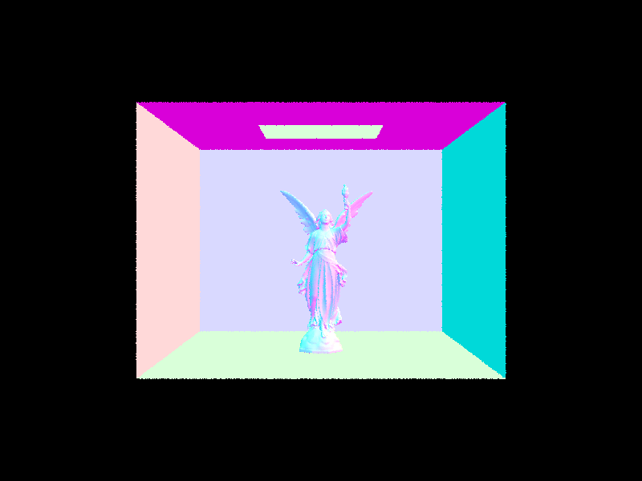
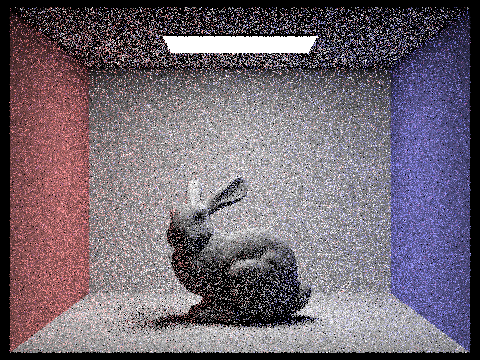

CS184/284A Spring 2025 Homework 3 Write-Up
Names: Rachel Chen
Link to webpage: hw-webpages-kururin/hw3/index.html
Link to GitHub repository: sp25-hw3-kafka
Overview
In this project I learned about how to render a 3D scene. It started off with implementing ray intercections in order to sample and visualize the objects. Then, I implemented a bounding volume hierachy in order to increase the speed of the renderings. Finally, the rest of the project focused on rendering realistic lighting, staring with direct light and moving to indirect light, along with adpative sampling.· · ────── ꒰ঌ·✦·໒꒱ ────── · ·

· · ────── ꒰ঌ·✦·໒꒱ ────── · ·
Part 1: Ray Generation and Scene Intersection
To generate the camera ray, I first transform the image coordinates into camera space, ensuring that the horizontal and vertical fields of view (hFov and vFov) are converted into radians for accurate calculations. Using these transformed coordinates, I create a direction vector in camera space. This vector is then transformed into world space using the camera-to-world rotation matrix. Finally, I set the ray’s min and max t values to nClip and fClip, respectively, to define its valid range.Next, I generate pixel samples by looping over the number of ns_aa samples to approximate the integral of radiance over a pixel, effectively averaging the global illumination. In each iteration, I obtain a sample from the grid sampler, normalize the coordinates, generate a ray using these coordinates, and accumulate the results to compute the average. After the loop, I update the pixel color based on this computed average.
Following this, I implemented ray-triangle and ray-sphere intersection algorithms. Both approaches involve solving for the intersection by computing the t value, checking if it falls within the valid bounds, updating max_t, and populating the intersection struct if an intersection occurs.
For the triangle intersection algorithm specifically, I start by solving for t by following the Möller Trumbore Algorithm. The algorithm expresses the intersection in terms of t and barycentric weights b1 and b2, setting up a system of equations to solve them. I solve the equations and check if the barycentric weights fall within the valid [0,1] range as well as computing the determinant to ensure the ray is not parallel to the plane. If t is out of bounds, I return false. Otherwise, I populate the intersection struct and update max_t before returning true.

|

|
|
|
|
Part 2: Bounding Volume Hierarchy
My BVH construction starts by iterating through all the primitives, setting their bounding boxes, and tracking both the number of primitives and the cumulative vector sum of their centroids. Based on the bounding box, I create a node, which I return if the number of primitives falls within the max leaf size. Otherwise, I determine the range of each axis in the bounding box to find the largest. I then compute the average centroid of the primitives and use it as the splitting point along the largest axis. My heuristic is based on the average centroid, prioritizing a split along the axis with the largest range and, if this average would result in no actual split, I instead split the primitives equally to prevent an unbalanced division. After that, I create two new iterators–one for the left node and one for the right–partitioning the primitives based on the chosen split point and recursively building the left and right child nodes for the current BVH layer.|

|
|
|
|
|
| File | Primitives | Before BVH | After BVH |
| Cow | 5856 primitives |
Rendering: 43.3446s Averaged 5856 intersection tests / ray |
Rendering: 0.0865s Averaged 13.160794 intersection tests / ray |
| Dragon | 105120 primitives |
Rendering: 1275.6844s Averaged 105120 intersection tests / ray |
Rendering: 0.1103s Averaged 15.866252 intersection tests / ray |
| CBLucy | 133796 primitives |
Rendering: 1236.1563s Averaged 133796 intersection tests / ray |
Rendering: 0.1049s Averaged 15.524567 intersection tests / ray |
The rendering times with BVH are significantly faster than the ones without. With BVH, both simpler and more complex geometries can render in less than a second, whereas previously, rendering could take over 20 minutes—even the fastest cases with fewer primitives took more than a few seconds. This massive improvement comes from the fact that without BVH, the algorithm inefficiently processes every single intersection, looping through every surface in linear time. In contrast, BVH improves efficiency by reducing the number of ray-intersection tests through a tree structure that allows early exits when a bounding box is missed. As a result, rendering time scales logarithmically instead of linearly.
Part 3: Direct Illumination
Uniform SamplingTo implement direct lighting with uniform hemisphere sampling, I loop by the number of samples, using the hemisphere sampler to generate a sample direction in each iteration. Then, I create a new ray with its origin set to the hit point, offset by EPS_F to prevent self-intersection, and its direction set to the sampled direction transformed into world space (wi). The ray’s min_t is also set to EPS_F for the same reason. After that, I check if the ray intersects any objects. If it does, I calculate the light contribution using the reflection equation, which involves multiplying the emitted radiance of the intersected object by the BSDF, weighting it by cos_theta(wi), and dividing by the PDF, which is 1/2π for uniform sampling. Finally, after accumulating the contributions from all samples, I divide the total by the number of samples to estimate the final lighting value.
Importance sampling
For importance sampling, I iterate through every light in the scene. Then, for each light, I loop through the number of samples, but only take one sample if it’s a point light since all samples would be the same. I use the light’s sampling function to get a direction (wi), the distance to the light, the emitted radiance, and the PDF. If the sampled direction is behind the surface, I discard it. Otherwise, I create a shadow ray originating from the hit point, offset by EPS_F, in the sampled direction, with min_t set to EPS_F and max_t set to the distance to the light minus EPS_F to ensure valid intersections. If the shadow ray doesn’t hit any objects, meaning the light is not blocked, I compute the contribution using the reflection equation and add it to the accumulated light for that source. After finishing the samples for a light, I divide the accumulated light by the number of samples and add it to the total lighting estimate.
|
16 samples, 8 light rays |
64 samples, 32 light rays |
|
64 samples, 32 light rays |
64 samples, 32 light rays |
|
64 samples, 32 light rays |
64 samples, 32 light rays |
Uniform vs Importance Sampling
The uniform hemisphere sampling produces softer lighting but also introduces more noise at the same sample rate and number of light rays. This is especially noticeable around the main light, where the transition between lit and shadowed areas appears more blurred. The directly lit areas, like the bunny’s ears under the light source, also render brighter. The noise and softer effect from uniform hemisphere sampling happen because not every sample actually hits the light, making it less accurate than importance sampling. Importance sampling, on the other hand, ensures that each light is accounted for, so the rendered image converges to the correct color more quickly and with fewer samples.
|
1 samples, 1 light ray |
1 samples, 4 light ray |
|
1 samples, 16 light ray |
1 samples, 32 light ray |
Importance sampling Comparison
The noise levels decrease as the number of light rays increase, with the most noticeable improvement happening between 1 and 4 light rays. The initial noise is heavy, with dark patches that gradually lighten as more samples are added, bringing the rendered colors closer to the correct values. The edges of the shadows also become clearer as the noise dissipates, making the soft shadow appear more defined. This happens because increasing the number of samples improves the approximation of the integral, leading to a more accurate and stable result.
Part 4: Global Illumination
I implemented the indirect lighting function by first calling one_bounce_radiance, which estimates the direct lighting contribution using either uniform or importance sampling. Then, I apply Russian roulette with a 60% chance of continuing and a 40% chance of terminating early using coin_flip(0.6). If the function decides to continue, I sample a new direction from the BSDF at the hit point, obtaining wi and its corresponding pdf. If pdf is zero, I return the accumulated radiance so far. Otherwise, I create a new ray starting at the hit point, offset by EPS_F to prevent self-intersections, with it’s direction set to the sampled direction transformed into world space (wi). The new ray’s min_t is also set to EPS_F, and its depth is decremented to track remaining bounces.If the new ray intersects another object and we haven’t reached max ray depth, I recursively call at_least_one_bounce_radiance on it, applying the reflection equation. The contribution from this bounce is weighted by the sampled BSDF value, the cosine term, and the pdf, and is divided by the survival probability to keep the estimate unbiased. The final lighting value is returned.
|
1024 samples, 16 light rays Max Depth: 5 |
1024 samples, 16 light rays Max Depth: 5 |
Direct vs Indirect Illumination
The direct illumination image has high contrast with harsh, dark shadows under the spheres and on the roof, while the areas directly hit by the light source, like the tops of the spheres, are very bright. This happens because only direct light is considered, meaning only surfaces directly exposed to the light source receive illumination. In contrast, the indirect illumination image has much softer lighting and shadows. The bottoms of the spheres are faintly lit due to light bouncing off other surfaces, even though the direct light source itself is not present in this scene. Since this scene includes multiple light bounces, the overall lighting is more evenly distributed, but the scene still appears considerably darker due to the absence of direct light.
|
1024 samples, 16 light rays Max Depth: 5 |
1024 samples, 16 light rays Max Depth: 5 |
Accumulated vs unaccumulated Bounces
The unaccumulated bounces show the light contribution at a specific ray depth. At zero bounces, only the direct light from the source is visible. With each bounce, some light is lost, so higher bounces appear dimmer, and the scene becomes less lit. Every consecutive unaccumulated bounce results in a softer and dimmer light, eventually fading to black if extended infinitely.
On the other hand, the accumulated bounces brighten the scene since each bounce adds more light rather than showing just a single depth. The only time both renders look the same is at max_ray_depth = 0, where there are no indirect bounces to accumulate. As max_ray_depth increases, the difference grows—accumulated renders become brighter as they gather more light, while unaccumulated renders show how light diminishes with each individual bounce.
|
1024 sample, 4 light rays Max Depth: 0 |
1024 samples, 4 light rays Max Depth: 0 |
|
1024 samples, 4 light rays Max Depth: 1 |
1024 sample, 4 light rays Max Depth: 1 |
|
1024 sample, 4 light rays Max Depth: 2 |
1024 samples, 4 light rays Max Depth: 2 |
|
1024 sample, 4 light rays Max Depth: 3 |
1024 samples, 4 light rays Max Depth: 3 |
|
1024 sample, 4 light rays Max Depth: 4 |
1024 samples, 4 light rays Max Depth: 4 |
|
1024 sample, 4 light rays Max Depth: 5 |
1024 samples, 4 light rays Max Depth: 5 |
Russian Roulette - Max Ray Depth Comparision
As we increase max_ray_depth while rendering with Russian roulette, the brighter the scene becomes as the higher the ray depth, the more bounces of light we are taking account for. This reduces harsh shadows and decreases the contrast of the overall scene. However, this only happens to a certain point as less and less light is present in each bounce and by bounce x the difference begins to become indiscernible.
|
1024 sample, 4 light rays Max Depth: 0 |
1024 samples, 4 light rays Max Depth: 1 |
|
1024 sample, 4 light rays Max Depth: 2 |
1024 samples, 4 light rays Max Depth: 3 |
|
1024 sample, 4 light rays Max Depth: 4 |
1024 samples, 4 light rays Max Depth: 100 |
Sample per pixel Comparision
As the number of samples per pixel increases, the noise in the image decreases and the scene becomes clearer. At lower sample levels, the differences are more noticeable, while at higher sample levels, the changes become less significant as the values start to converge and stabilize. So, increasing samples increases the render quality, creating more accurate renders.
|

1 sample, 4 light rays Max Depth: 5 |
2 samples, 4 light rays Max Depth: 5 |
|
4 sample, 4 light rays Max Depth: 5 |
8 samples, 4 light rays Max Depth: 5 |
|
16 sample, 4 light rays Max Depth: 5 |
64 samples, 4 light rays Max Depth: 5 |
|
1024 sample, 4 light rays Max Depth: 5 |
Part 5: Adaptive Sampling
Adaptive sampling helps reduce unnecessary samples per pixel by focusing more samples on complex areas while minimizing samples in simpler regions. In our adaptive sampling algorithm, we stop sampling a pixel once it has converged to a certain threshold, determined by maxTolerance and samplesPerBatch.For each sample, I keep track of the sum of all illuminance values (s1), the sum of their squares (s2), and the number of samples taken so far. Every samplesPerBatch samples, I compute the mean and variance using s1, s2, and the current sample count. From this, I calculate I = 1.96 * standard deviation / sqrt(number of samples so far) and compare it to maxTolerance * mean. If I is less than or equal to this threshold, I stop sampling since a low I value means the variance is small or the number of samples is large enough, indicating sufficient convergence. The 1.96 factor ensures we maintain a 95% confidence interval when determining pixel convergence. This results in an algorithm that will sample less for pixels that converge in fewer samples.
Scene 1: Spheres
From the sampling rate visualization, we can observe that the shadows cast from the spheres and the shadowy areas on the roof needed the most samples. In contrast, areas affected by direct light or the light source itself required the least amount of samples. The indirect lighting required a medium amount of samples, somewhere between the other two areas. From these results, we can determine that shadows take the most samples to converge, while the directly lit areas take the least time to converge.
|
2048 samples, 1 light ray Max Depth: 5 |
2048 samples, 1 light ray Max Depth: 5 |
The bunny scene illustrates the same points found from the scene of the spheres rendered with adaptive sampling. Under the bunny, along with the shadow the bunny cast, and the shadowy areas of the roof all took more samples. The rest of the scene was similar too with the soft shadows taking medium time and the direct light taking the least samples to converge.
|
2048 samples, 1 light ray Max Depth: 5 |
2048 samples, 1 light ray Max Depth: 5 |
· · ────── ꒰ঌ·✦·໒꒱ ────── · ·